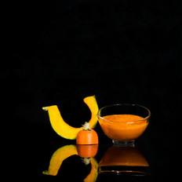
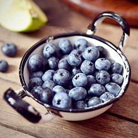
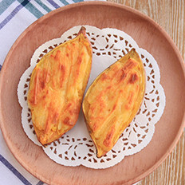

登录
注册
微博登录
QQ登录
首页
菜谱大全
家常菜谱
家常菜
凉菜
素食
晚餐
私家菜
热菜
海鲜
孕妇
早餐
午餐
甜品点心
汤粥
宝宝食谱-婴儿食谱
糕点主食
微波炉
中华菜系
川菜
粤菜
东北菜
湘菜
鲁菜
浙菜
湖北菜
清真菜
各地小吃
四川小吃
广东小吃
北京小吃
陕西小吃
外国菜谱
韩国料理
日本料理
法国菜
意大利餐
烘焙
蛋糕面包
饼干配方
甜品点心
厨房百科
摆盘围边
烹饪技巧
生活妙招
美食专题
食材百科
蔬菜
水果
谷类
饮食健康
饮食健康
饮食小常识
美容瘦身
食品安全
养生妙方
饮食禁忌
中医保健
母婴健康饮食
饮食新闻
功能性调理
清热去火
减肥
祛痰
乌发
滋阴补肾
健脾开胃
消化不良
清热解毒
补阳壮阳
增肥
人群膳食
孕妇
老人
产妇
哺乳期
青少年
幼儿
学龄期儿童
疾病调理
糖尿病
高血压
痛风
胃炎
痔疮
更年期
甲状腺
脏腑调理
感冒
补肾
阳痿早泄
补血
便秘
腹泻
活血化瘀
美食菜单
家居馆
美食达人
菜谱视频
手机版下载
自动收缩
回到顶部
未时小肠养生期间，宜心平气和的静下来，适合下棋等安静的活动
我的体质（未开放）
饮食健康
人群膳食
疾病调理
功能性调理
脏腑调理
饮食资讯
新鲜资讯
食品安全
饮食文化
美食典故
茶文化
外国饮食文化
酒文化
中西餐礼仪
专区
孕妇专区
健康指南
饮食小常识
饮食禁忌
养生妙方
中医保健
美容瘦身
母婴健康饮食
合理的饮食，是身体健康的第一要素
最新
|
最热

防癌
榨汁
甜味
初级入门
<5分钟
防癌、治胃病、降糖、治前列...
宝宝辅食南瓜胡萝卜泥
0 评论
4769 人气
格丽思小厨房
为什么网红们都爱丘比沙拉汁
49 评论
1932 人气
113291
考前饮食三大忌，这些坑你不要踩
14 评论
5802 人气
冻鱼保鲜保营养吗?
70 评论
11930 人气
诸葛白少侠
年末应酬多，喝酒前后饮食有讲究
14 评论
7333 人气
诸葛白少侠
哪些啤酒谣言还在飞?
25 评论
5059 人气
诸葛白少侠
睡觉打鼾吃什么好？
13 评论
7966 人气
诸葛白少侠
凉拌或油炸四季豆易中毒
11 评论
7475 人气
诸葛白少侠

办公室常备3类健康零食
21 评论
9490 人气
诸葛白少侠
这5类食物不甜但糖分高
7 评论
4473 人气
诸葛白少侠
橘子吃多变“小黄人”?
12 评论
5910 人气
诸葛白少侠

清洗烤箱的6个小窍门
10 评论
5952 人气
诸葛白少侠
1
2
3
4
5
...
下一页
共1665页，到第
页
站长统计


 京公网安备11010802026928
京公网安备11010802026928